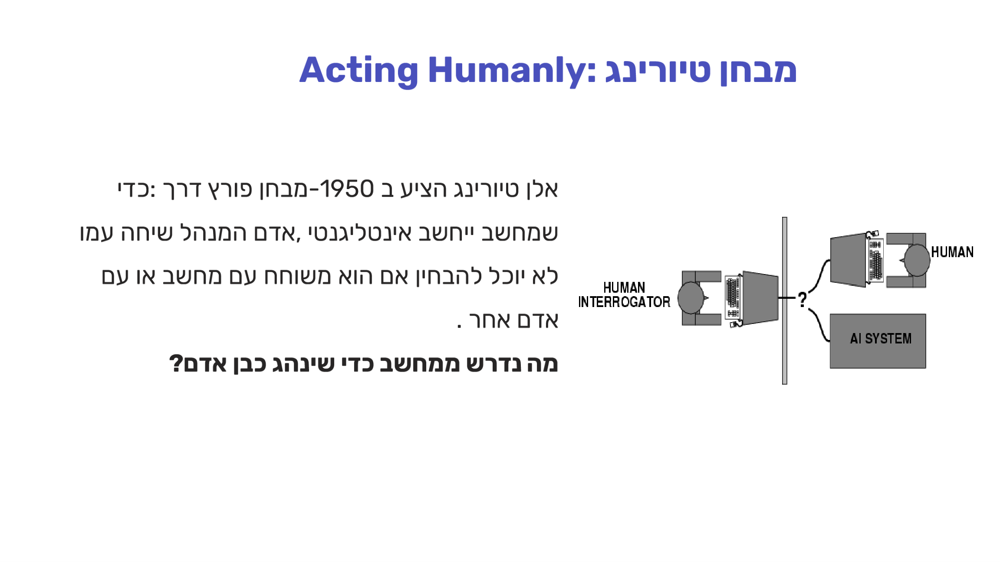
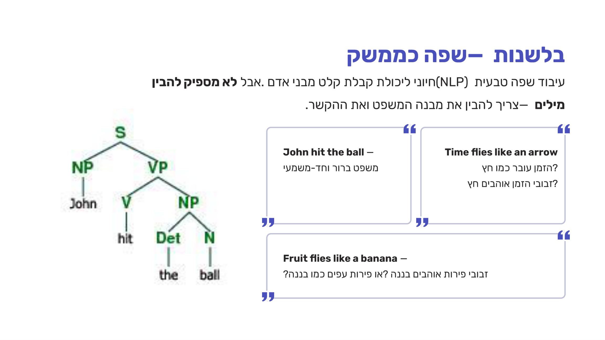
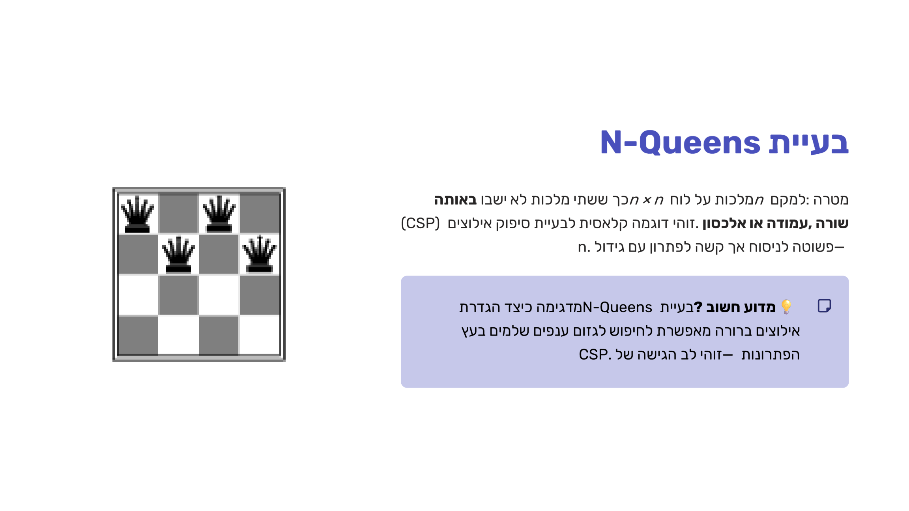
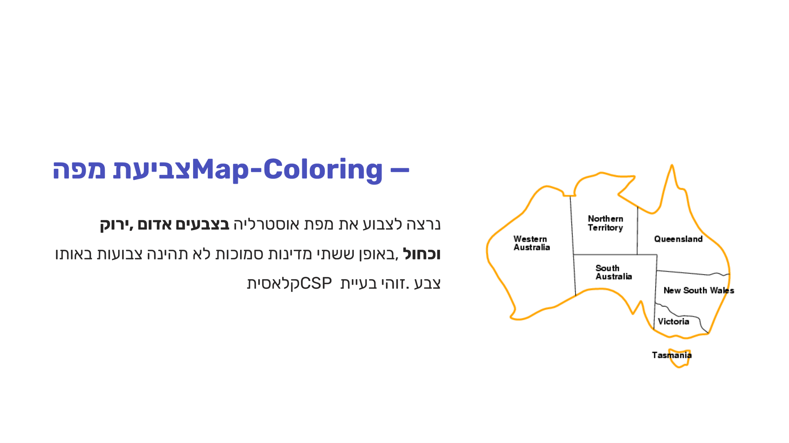
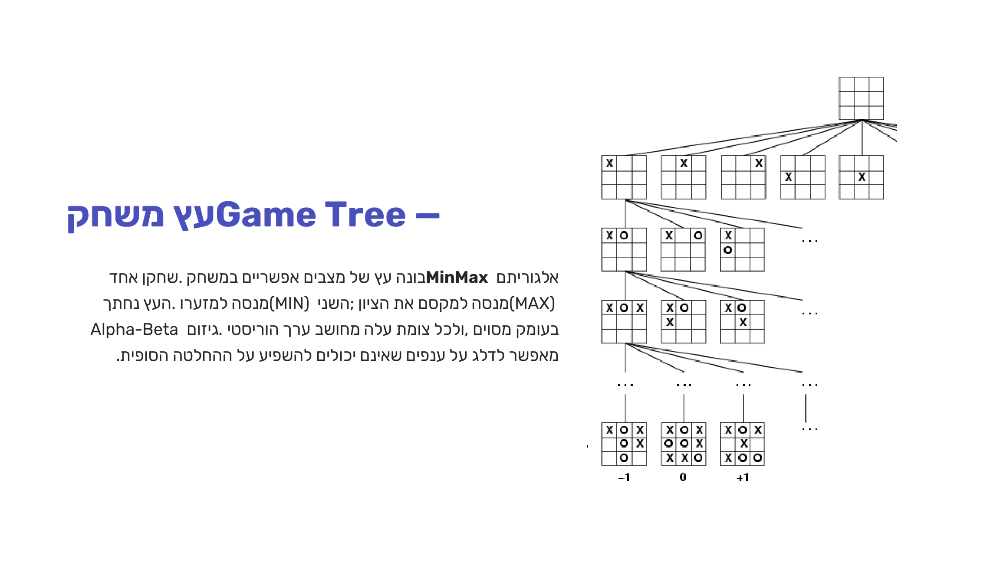
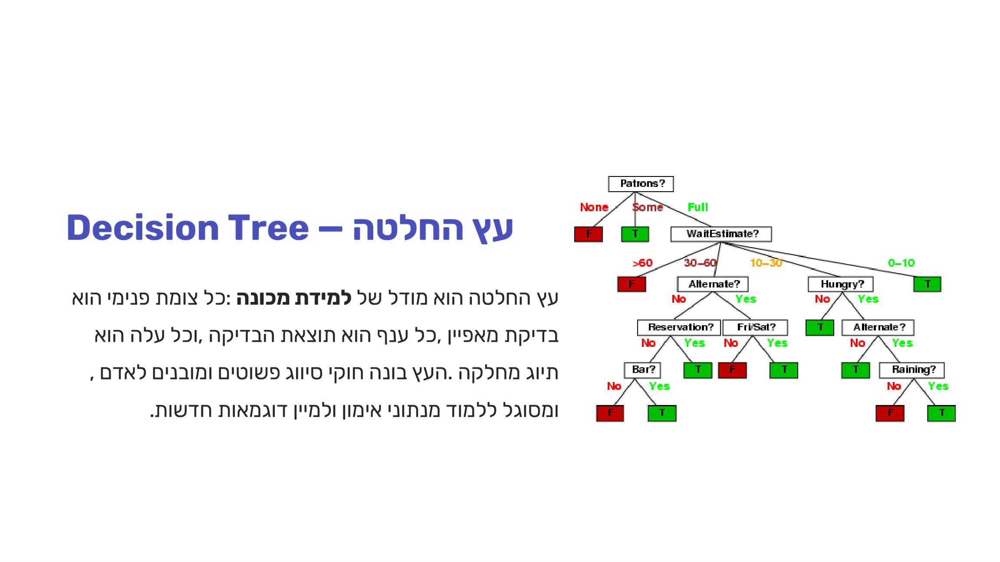

מבוא — מהי בינה מלאכותית
⏱ זמן משוער: 35 דק'
0. האינטואיציה — למה בכלל קורס שלם על "בינה מלאכותית"?
אינטליגנציה, בהגדרה הפשוטה ביותר שהשקפים פותחים איתה, היא היכולת ללמוד ולפתור בעיות. השאלה שהופכת את זה לתחום מדעי שלם היא: איך יוצרים את זה במחשב? וכאן מתחיל הקרב — כי יש בספרות לפחות ארבע דרכים שונות להגדיר "בינה מלאכותית", והן לא תמיד מסכימות אחת עם השנייה.
לפני שנצלול להגדרות הפורמליות, שווה לעגן את זה במשהו מוחשי: חברת BrainQ הישראלית מפתחת מערכת המנתחת אותות מוחיים ומספקת גירויים אלקטרומגנטיים מותאמים אישית לחולים לאחר שבץ מוחי ופגיעות ראש — דוגמה נאה לכך ש-AI כבר היום איננו רק "עץ משחק" תיאורטי, אלא כלי שמשפר ממש את איכות החיים של אנשים.
המצגת מסווגת את ההגדרות השונות לשתי קטגוריות-על: Acting Humanly — התנהגות שתיחשב אינטליגנטית אם אדם היה מבצע אותה (כולל תפיסה, שפה, למידה והסקת מסקנות) — מול Acting Rationally — ביצוע הפעולה הטובה ביותר להשגת מטרה, בהתבסס על המידע הזמין. זו לא רק אבחנה סמנטית: כפי שנראה בהמשך, הקורס כולו בנוי סביב ההגדרה השנייה — הסוכן הרציונלי.
מקור: 01-intro-to-ai.pdf (עמ' 2–4)
1. ארבע ההגדרות של בינה מלאכותית
אם מצליבים את שני הצירים מה בודקים (חשיבה מול פעולה) עם מול מה משווים (התנהגות אנושית מול התנהגות רציונלית-אידיאלית), מתקבלת טבלת 2×2 שמכסה את כל ההגדרות המקובלות ל-AI:
| כאדם (Humanly) | בתבונה (Rationally) | |
|---|---|---|
| חושבת (Thinking) | Thinking Humanly — מודלינג קוגניטיבי | Thinking Rationally — חוקי המחשבה (Laws of Thought) |
| פועלת (Acting) | Acting Humanly — מבחן טיורינג | Acting Rationally — סוכן רציונלי |
נעבור על ארבעת התאים אחד-אחד — כי כל אחד מהם מוביל לכיוון מחקר שונה בתחום.
1.1 Acting Humanly — מבחן טיורינג
אלן טיורינג הציע ב-1950 מבחן פורץ דרך: מבחן טיורינג — אדם (החוקר) מנהל שיחת טקסט עם שני משתתפים מאחורי מחיצה, אחד אדם והשני מחשב, ואינו יודע מי מהם מי. אם החוקר לא מצליח להבחין ביניהם — המחשב "עבר" את המבחן ונחשב אינטליגנטי לפי הגדרה זו.

1.2 Thinking Humanly — מודלינג קוגניטיבי
אם רוצים שמחשב יחשוב כמו בן אדם (ולא רק להתנהג כמוהו כלפי חוץ), צריך קודם להבין איך אדם עצמו חושב. זו בדיוק המשימה של מדע הקוגניציה — תחום שהתבסס בשנות ה-60, ומשלב עיבוד מידע פסיכולוגי עם בניית מודלים מתמטיים של תהליכי חשיבה, יחד עם ניסויים פסיכולוגיים מבוקרים להבנת פתרון בעיות והתנהגות בתנאי אי-ודאות.
1.3 Thinking Rationally — חוקי המחשבה
גישה שלישית: לוותר על החיקוי האנושי ולשאוף להיגיון פורמלי. כבר ביוון העתיקה פותחו צורות של לוגיקה פורמלית לייצוג חוקיות המחשבה, וב-1965 פותחה תוכנית שיכולה — עקרונית — לפתור כל בעיה שניתן לייצג בשפת הלוגיקה.
1.4 Acting Rationally — הסוכן הרציונלי (המסגרת של כל הקורס)
וזה מביא אותנו להגדרה שבה הקורס בוחר להתמקד: סוכן רציונלי. המילה agent מגיעה מלטינית agero — "לעשות" — וסוכן רציונלי הוא כזה שבוחר תמיד את הפעולה הטובה ביותר להשגת מטרה, בהינתן המידע שיש לו. שימו לב: התנהגות רציונלית לא בהכרח מצריכה מחשבה מפורשת — גם רפלקס אוטומטי, שמגיב מיידית לגירוי בלי "לחשוב", יכול להיות התנהגות רציונלית אופטימלית.
שלוש תכונות מגדירות סוכן כזה, לפי השקפים:
- פועל לאורך זמן — לא פעולה חד-פעמית, אלא פעילות מתמשכת בסביבה.
- משנה משימות תוך כדי פעולה — מעדכן יעדים ומתאים התנהגות למצב הנוכחי.
- מתאים עצמו לשינויים — בניגוד לתוכנה רגילה, לומד ומשתנה בהתאם לסביבה הדינמית.
זו בדיוק המסגרת שנשתמש בה לאורך כל הקורס: כל אלגוריתם שנלמד — חיפוש, CSP, משחקים, לוגיקה, למידה — הוא בעצם דרך לבנות סוכן שמתקרב כמה שיותר לרציונליות.
מקור: 01-intro-to-ai.pdf (עמ' 4–12)
2. הדיסציפלינות שמזינות את הבינה המלאכותית
AI הוא תחום בין-תחומי במהותו — הוא שואב רעיונות, כלים ותיאוריות משש דיסציפלינות אקדמיות שונות. שאלות התאמה בין דיסציפלינה לתרומה המדויקת שלה הן קלאסיות למבחן:
| דיסציפלינה | תרומה |
|---|---|
| פילוסופיה | חוקי הסקת מסקנות; הקשר בין ידע לפעולה; שאלות על תהליכי למידה |
| מתמטיקה | לוגיקה בוליאנית (ג'ורג' בול) ולוגיקה מסדר ראשון; הסתברות לאי-ודאות; סטטיסטיקה |
| כלכלה | תורת ההחלטות — קבלת החלטות ממידע חלקי; תורת המשחקים — ריבוי משתתפים |
| פסיכולוגיה | מדע הקוגניציה; כישורי פתרון בעיות והתנהגות בתנאי אי-ודאות |
| מדעי המחשב | חומרה ומחשוב; פיתוח אלגוריתמים; גבולות החישוביות (בעיות NPC) |
| בלשנות | עיבוד שפה טבעית (NLP) — הבנת מבנה ומשמעות |
הבלשנות מדגימה יפה למה NLP קשה: לא מספיק להבין מילים — צריך להבין מבנה משפט (parse tree) וגם הקשר. המשפט "Time flies like an arrow" מתפרש בכמה דרכים לגמרי שונות ("הזמן עובר כמו חץ" מול "זבובי הזמן אוהבים חץ"), וכך גם "Fruit flies like a banana".

אפילו כשהמבנה התחבירי ברור לגמרי, ההקשר עדיין קובע הכול. קחו את הפועל הפשוט "give":
| משפט | משמעות |
|---|---|
| Sam gave Dan a pen | העברה פיזית פשוטה של עצם |
| Sam gave Dan a black eye | גרימת נזק — לא העברה פיזית |
| Sam gave Dan a week | הענקת זמן — מושג מופשט |
| Sam gave up | פועל מורכב — משמעות שונה לחלוטין |
מקור: 01-intro-to-ai.pdf (עמ' 13–20)
3. הישגים בבינה מלאכותית — מבט-על
השם "בינה מלאכותית" נטבע בוועידת Dartmouth ב-1956, כמה שנים אחרי מאמר טיורינג. מאז התחום עבר גלים של אופוריה ואכזבה (למשל, פרויקט תרגום מכונה שקרס: "The spirit is willing but the flesh is weak" חזר מרוסית כ- "The vodka is good but the meat is rotten") — עד שהבשיל לדיסציפלינה עם הישגים מוחשיים. במקום לעבור שנה-שנה, הנה מבט-על לפי תחומים:
משחקים ואסטרטגיה
ב-1997 "כחול עמוק" של IBM ניצח בשחמט את אלוף העולם גארי קספרוב. עשרים שנה אחר כך AlphaGo של DeepMind ניצחה את אלוף העולם ב-GO — משחק שמרחב הפתרונות שלו גדול ממספר האטומים ביקום — וAlphaGo Zero הרחיקה לכת עוד יותר: היא למדה לשחק מאפס, ללא כל ידע אנושי קודם, רק מניסוי ושגיאה. עוד קודם, Proverb (1999) פתרה תשבצים טוב יותר מרוב בני האדם.
מדע ורפואה
AlphaFold של DeepMind פתרה בעיה שביולוגים התחבטו בה 50 שנה — ניבוי המבנה התלת-ממדי של חלבונים מרצף חומצות אמינו. בתחום הכירורגיה, הרובוט HipNav (החל מ-1996) מסייע בהכנסת מפרק ירך מלאכותי בדיוק שיד אנושית לא משיגה. ובישראל, מערכת MEDecide מייעצת לרופאים על בסיס נתוני מטופל, ו-SerenusAI (2022) היא פלטפורמת בריאות נוספת מבוססת AI.
לוגיסטיקה, ביטחון וחלל
NASA השתמשה בתוכנת AI לניהול מעבורת החלל בזמן אמת, וצבא ארה"ב תכנן איתה לוגיסטיקה ל-50,000 רכבים ואנשים במלחמת המפרץ (1991). מערכת מבוססת תורת המשחקים סייעה לאבטח את שדה התעופה LAX. רכב החלל Curiosity (2012) פועל באופן עצמאי על מאדים כי התקשורת עם כדור הארץ לוקחת עד 20 דקות בכל כיוון — סוכן רציונלי לכל דבר. ובפברואר 2021, שתי מערכות של יחידה 8200 — אלכימאי (ניהול התרעות גבולות) ו-צל / SHADOW ("גוגל" של היחידה) — זכו בפרס ראמ"ן לחשיבה יוצרת.
שפה ויצירה
בנובמבר 2022 השיקה OpenAI את ChatGPT: מיליון משתמשים תוך חמישה ימים, מאה מיליון תוך חודשיים — מהאימוצים המהירים בהיסטוריה של טכנולוגיה. במקביל, DALL·E 2 יוצרת תמונות ריאליסטיות מתיאור טקסטואלי, ומטשטשת את הגבול בין יצירתיות אנושית ליכולת מכונה.
🎓 הרחבה — לא נדרש למבחן: קצב האימוץ
קצב האימוץ של ChatGPT (מיליון משתמשים בחמישה ימים) הוא חלק ממגמה רחבה יותר: כלים דיגיטליים חדשים מגיעים לקהל המונים מהר יותר מדור לדור — הטלפון לקח עשרות שנים, הטלוויזיה שנים, האינטרנט שנים בודדות, ומודלי שפה גדולים — ימים. זו נקודת הקשר בין ההיסטוריה של AI לבין הקצב הטכנולוגי הכללי של ימינו, ואינה נבחנת כשלעצמה.
מקור: 01-intro-to-ai.pdf (עמ' 21–34)
4. תרגיל כיתה — הישגים חדשים של AI
תרגיל הכיתה מסלייד 35 במצגת, כפי שהוגדר:
משימה: מצאו כל אחד/אחת באופן אישי הישג חדש של בינה מלאכותית שלא הוצג בשיעור, ותארו אותו בצורה תמציתית וברורה.
שלב 1 — חקרו: חפשו כתבות, מאמרים או סרטונים על הישגים עדכניים בבינה מלאכותית מהשנים האחרונות.
שלב 2 — תעדו: מלאו את ממצאיכם במצגת המשותפת.
שלב 3 — הגישו: הגישו בתיבת הגשה של מטלת הכנה 1 במודל.
מקור: 01-intro-to-ai.pdf (עמ' 35)
5. לאן הקורס הולך — הטיזרים מסוף המצגת
המצגת מסיימת בסקירה מהירה של תחומי המשנה שיכוסו בקורס: פתרון בעיות בעזרת חיפוש, בעיות סיפוק אילוצים (CSP), משחקים, סוכני הגיון, למידת מכונה ותכנון. חמש דוגמאות-טיזר מקבלות עמוד משלהן — וכל אחת מהן היא בעצם תצוגה מקדימה של יחידה שנלמד בהמשך:
N-Queens, קריפטאריתמטיקה וצביעת מפה — CSP
שלוש הבעיות הבאות חולקות מבנה משותף: משתנים עם דומיין ערכים, ואילוצים ביניהם.
- N-Queens — למקם n מלכות על לוח n×n כך ששתי מלכות לא תשבנה באותה שורה, עמודה או אלכסון.
- קריפטאריתמטיקה — כל אות מייצגת ספרה שונה, כך שפעולת החשבון נכונה (למשל SEND + MORE = MONEY).
- צביעת מפה — לצבוע את מפת אוסטרליה בשלושה צבעים כך ששתי מדינות שכנות לא תיצבענה באותו צבע.
שלושתן — יחד עם ניסוח פורמלי, backtracking וההיוריסטיקות שמאיצות אותו — יחכו לכם ביחידה CSP ו-Backtracking.


עץ משחק — Minimax וגיזום Alpha-Beta
אלגוריתם Minimax בונה עץ של מצבים אפשריים במשחק: שחקן MAX מנסה למקסם את הציון, שחקן MIN למזער אותו, ובעלים מחושב ערך היוריסטי. גיזום Alpha-Beta מדלג על ענפים שלא יכולים להשפיע על ההחלטה הסופית — בלי לפגוע בתוצאה.

התרגום המלא לפסאודו-קוד, הטרייסים המלאים וגיזום Alpha-Beta צעד-אחר-צעד מחכים ביחידה Minimax ואלפא-בטא.
עץ החלטה — למידת מכונה
עץ החלטה הוא מודל למידת מכונה: כל צומת פנימי הוא בדיקת מאפיין, כל ענף הוא תוצאת הבדיקה, וכל עלה הוא תיוג. הדוגמה הקלאסית מה-AIMA היא עץ המסעדה — האם להמתין לשולחן, לפי מספר הסועדים, זמן ההמתנה, יום בשבוע ועוד.

איך בונים עץ כזה אוטומטית מנתוני אימון, מהי אנטרופיה ו-Information Gain, ואיך נמנעים מ-overfitting — כל זה ביחידה עצי החלטה.
מקור: 01-intro-to-ai.pdf (עמ' 36–43)
6. מלכודות למבחן
7. בדיקה עצמית
מה בדיוק ההבדל בין ההגדרה Acting Humanly להגדרה Acting Rationally, לפי השקפים?
אילו ארבע יכולות חייב מחשב להפגין כדי לעבור את מבחן טיורינג, לפי השקפים?
ב-1965 פותחה תוכנית שפותרת כל בעיה שניתן לייצג בשפת הלוגיקה. מדוע בכל זאת היא לא פתרה את כל בעיות העולם?
מהי אחת משלוש התכונות שמגדירות סוכן רציונלי (agent, מלטינית agero = "לעשות"), לפי השקפים?
מה, לפי השקפים, תורמת דווקא הכלכלה לבינה מלאכותית?
מה היה המיוחד ב-AlphaGo Zero, לפי הישגי הבינה המלאכותית שהוצגו?
המשפטים "Sam gave Dan a black eye" ו-"Sam gave up" ביחס לפועל "give" ממחישים בעיקר מה?
לפי ההגדרה שפותחת את השקפים, מהי "אינטליגנציה"?
סיימתם את הפרק? סמנו אותו כהושלם: